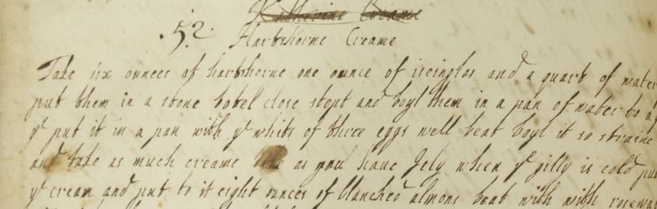

1. General Introduction
1.1. Overview
Lauren Sainsbury
The general introduction aims to give the reader a basic introduction to the manuscript's contents and structure, and an insight into its author - Jane Loraine - while also acknowledging her fellow contributors. In the general introduction you will find useful materials on the following:
- Content and Significance of Jane Loraine's Recipe Book
- Jane Loraine: What We Know
- Summary of Critical Field
- Historical Context
1.2. Content and Significance of Jane Loraine's Recipe Book
Lauren Sainsbury and James McCoull
Contents and structure
Jane Loraine's Recipe Book contains 78 folios including the contents page, and these are numbered in pencil on the recto of each leaf. The page numbers begin on f.3r, and go from 1 to 91, appearing only on the recto of each folio.
There is a total of approximately 622 recipes listed in the manuscript, which are inconsistently numbered. There are recipes numbered from 1 to 63, another group from 1 to 59, another from 1 to 44, another from 1 to 57, and another from 1 to 110, with a total of 289 unnumbered recipes present throughout (the majority appear towards the end, with the last 238 recipes being unnumbered). The total number of recipes is approximate as the divisions between each recipe are inconsistent. In some cases the recipes are both unnumbered and untitled, and therefore their beginnings and endings are difficult to discern.
The inconsistency of numbering is evidently due to the recipe book having been assembled from collections of pages rather than being progressively written as a book. Because of this unique structure, the recipes have already been numbered for their own smaller collections prior to assembly. The folios are collected in a different binding from their original seventeenth century binding, and the pagination in pencil has been added retroactively to fit the new binding.
The Contents page
The text begins with a contents page containing 37 entries, each with the relevant page number attached. The contents page was evidently created for organisational purposes by the individual responsible for initially compiling the recipes together. This is suggested as the page numbers have been added to each page after the recipes were written, fitting into any gaps available. A note reading ‘this’ appears throughout the manuscript, which refers to the entries that have been selected to appear on the contents page.
Though the contents appears to list single recipes, the entries essentially refer to where groups of variations on a recipe can be found. For example, remedies for rickets, scurvy and worms appear in their own ‘sections’, and the contents page directs to these sections. Though the contents are mostly in page order, there are three anomalous entries at the end of the contents; two for page 54 and one for page 9. It is probable that whoever wrote the contents page added these entries after deciding that they were significant enough to warrant an entry, having already written the rest of the contents.
1.3. Jane Loraine: What We Know
Christina Dixon and Amy Moore-Holmes
Although there is evidence of multiple authors in the Jane Loraine recipe book, thirteen signatures can be attributed to Jane Loraine herself. We believe this to be an indicator that Jane Loraine was the owner of the manuscript.
We have endeavoured to provide some information on Jane Loraine to help form an understanding of her personal life and circumstances. For ease and clarity, we have detailed what information we are able to provide into the following categories: Age, Status, Lineage and location, Family connections, and Handwriting.
However, not much is known of Jane Loraine and it is important to recognise that the dearth of historical material specifically relating to women of the 17th Century makes it difficult to attribute the text to any individual or provide detailed information.
As a result, information such as whether she married or had any children is unknown. Despite this, we hope the information we do have will provide significant insight into Jane Loraine's life.
Age
According to the will of Thomas Loraine, Jane was born in 1666. This means that Jane would have been approximately eighteen at the beginning of the composition of her recipe book in 1684. Through her presence in her father's will, it can be deduced that Jane Loraine lived to at least the age of fifty-one, although it is unclear exactly when or how she died.
Status
The Loraine family were considered to be of upper class status, elevated by King Charles II to a baronet of England in 1664. This rise in status is documented by Lambton Loraine in The Pedigree and memoirs of the family of Loraine of Kirkharle (1902), attributing it to Thomas Loraine for sending thirty foot soldiers to Ireland to protect the plantation of Ulster.1
Lineage
It is believed that Jane Loraine is the daughter of Sir Thomas Loraine (born 1637) and his cousin, Grace Fenwick (born 1642), who married at Hexham Abbey in 1657. Both were members of the Loraine family of Kirkharle, Northumberland.
It is unclear how many children Thomas Loraine and Grace Loraine had. Some records indicate that they had nineteen children in total, fourteen sons and five daughters. However, Lambton Loraine's account contradicts this figure, noting that only seven children have been definitively traced.
Although there is little information on much of the Lorraine family, there is a significant amount of historical material relating to Jane's father. Thomas Loraine succeeded his own father (also named Thomas Loraine) as head of the family at the age of twelve, following his father's premature death from a fever. He also served as 1st Baronet during the composition of this recipe book.
Thomas Loraine died on the 10th January 1717, aged eighty. His will details two further daughters, Mary and Katherine, although no subsequent information about them is known. It also mentions Jane's brothers William, Thomas, and Charles. All three are issued before Jane within the will. William Loraine succeeded his father to become 2nd Baronet in his sixty-first year.
Grace died at the age of sixty-two on the 2nd December 1706.
Family connections
At least thirty-one other individuals appear in the Jane Loraine recipe book. The most prominent name after Jane Loraine herself is Fenwick. On folio 36r the name Fenwick appears multiple times. This is unsurprising as it can be understood that these two prominent families of the Northumberland area were heavily intermarried. The 1st Baronet's wife, Grace Fenwick, lived during the text's creation. Grace's grandmother, furthermore, was a Grace Lorraine who had married Sir John Fenwick.
Jane Loraine's Handwriting
In Early Modern Women's Writing, Heather Wolfe notes that non-cursive semi-formal italic style of handwriting was the hand predominantly used by women in the first half of the seventeenth-century.3 However, by the end of the century most men and women had adopted the round hand.
Thus, a round style of handwriting, as demonstrated by Jane Loraine, is generally associated with a person born mid-century or later. This corresponds with the time that Jane was writing this recipe book in and the round hand Jane Loraine employs within the text, as demonstrated on folio 33v.
1.4. Summary of the Critical Field
Ryan De Leon and Sarah France
Sara Pennell and Michelle DiMeo have claimed that recipe books from the early modern period ‘have only recently received mainstream attention from academic scholars’, and most notably, ‘have not traditionally been seen as important sources beyond particular disciplinary arenas’.4
Developing research has begun to discover the purpose and meaning that modern scholarship stands to gain from using these manuscripts as a source of academic study, exploring their cultural significance beyond solely food history.
Recipe books act as starting points from which to delve into the domestic world of the early modern period; they can be understood as culinary texts, medical texts, historical objects, and a type of life writing. Studying them paints a picture of the social and cultural lives of the domestic sphere and of those in it.
Scholars can examine how the domestic sphere branches out beyond their initial assumptions and unearth a diverse understanding of the early modern household.
Gynocentric networks
Recipe books are highly significant within gender studies. They document a field dominated by women and provide researchers with a representation of wide gynocentric networks. These manuscripts depict the domestic sphere as a place where women held authority in the home and in the community.
Critics have explored the implications of the social communities the recipe books were shared within; though the recipe books did have male contributors (see Historical Context), they were largely dominated by women. Elaine Leong notes that ‘the majority of these recipe books were created by family collectives, who worked in collaboration across spatial, geographical and temporal boundaries’.5
The multiple hands and signatures within the books create a sort of historical palimpsest, telling the story of the manuscript as it is shared and passed down through generations. Daughters would inherit these books from their mothers, which lead to the books becoming what Sara Pennell describes as ‘a particularly female construction, and moreover, a highly-valued focus of inter-generational routes for female-to-female communication’.6
In observing the relations mapped out within these manuscripts, researchers can gain an insight into the female relationships established in the period, and the use of recipes as a source of communication. Recipe books were a female domain, with the medical recipes often concerned with female ailments.
Catherine Field explores a selection of recipes with an undercurrent of potentially controversial instructions: for example, inducing an abortion in the case of an unwanted pregnancy. The example given by Field is a recipe with a warning that excess usage may cause the death of a foetus: ‘take them soone away, or they will cause her to cast all in her belly’.7 This is suggestive of a supportive female network prevalent within the period, as women would work to provide other women in different areas and different time periods with a means of control over their own bodies.
Authorial authority
Critical research also explores the ways in which recipe books such as these play with the complex notions of authorial authority.8 Critics must consider how to reconstruct the identities of the authors of these books, and how they can understand authorship in new ways.
Pennell and DiMeo note that ‘the 'author' is an elusive quarry in many early modern texts’, citing reasons as diverse as ‘legal framework […] moral anxieties around the public persona of the author (particularly the female author) and the difficulties of assigning modern notions of authorship to certain text formats’.9 This is further complicated due to the nature of recipe books as a collaborative work, with multiple contributors who would often leave their entries unsigned.
It is necessary to explore how to gain a greater understanding of the identity of the authors, and consequentially, of the early modern woman, when the authors within these texts are multiple and often not explicitly distinguished. Is it possible to find an individual identity within a collective written identity?
Field suggests that although ‘The genre reflects a self that defies easy boundaries or definitions of singleness, [it] still projects an insistent emphasis on the identity of the individual through concern with practice and personal experience of recipes’.10 Despite the complexity of multiple authors, the focus within the content on practicing and amending recipes allows critics to understand the individual within the collective.
The books challenge ideas of singularity not only in authorship, but in genre. Recipes would change fluidly between medical, culinary, and cosmetic, sometimes even belonging to two categories at once.
This dispels normative concepts of these genres, encouraging a hybrid understanding of medicine and culinary recipes. Field writes that this flexibility ‘fostered a correspondingly fluid self, constructed as positive, authoritative and capable of healing and being healed through the writing, practice, proving and exchange of medicinal and culinary receipts’.11
These recipe books reflect positive interpretations of the self and the body. Field explains how for the early modern period, writing about the ‘self’ was generally understood as an attempt to govern the unruly, shameful body.
For women in particular, writing the self was a complex process. Women were faced with the task of writing about themselves whilst retaining the modest, submissive qualities expected from a woman of the period, which has in part resulted in the lack of female representation in manuscripts.
By turning to recipe books, women could draw on their domestic authority in order to justify their writing. Recipe books can therefore be understood as a textual space that enabled women's positive expressions of the self: their bodies were presented as healable, and capable of healing, instead of a site of shame.
Through analysis of these manuscripts, scholars can relocate and make visible the early modern female experience. Susan Leonardi makes an interesting association between the literal act of making and reproduction of recipes, and ‘women's reproductive capacity’.12
The female space of the recipe books allow a further representation of the reroductivity of these women, not solely through the act of bearing children, but through making, mending, and creating in all aspects of the household and community. Studying these recipe books therefore provides the opportunity to analyse and frame the female body as productive and reproductive in various ways.
Contemporary and practical research
The appeal in research on these recipe manuscripts goes beyond the methodological or archaeological approach; the research provides access to other more practical disciplines, such as food technology.
There is a growing group of online sites which engages with the practicalities of making the recipes, having transcribed and modernised them for today's kitchens.13
Annie Gray states that ‘it is only through studying [recipe books] in a variety of interdisciplinary ways that their full potential can begin to be realised’.14
By transcribing this text, we are able to make it accessible to all, and as such, allow it to enter the current critical field of research. Digitising and making these recipes available to the public allows us as editors to add to the dialogue surrounding the early modern recipes, removing barriers of inaccessibility.
This will improve research in a range of disciplines. Pennell and DiMeo write that ‘the 'intertextuality' of recipes makes them prime sites for conversing with the past, distant presents, and, in their mobility, even the future. Recipes provided the focus for vicarious and actual interaction with not only other people, but other times, places and cultures, and the compilation of a manuscript, or the reading of a cookery book, could take its makers far from the kitchen hearth — aesthetically […] geographically, socially and intellectually’.15
In sharing this manuscript, we are able to create a collaboration across temporal and spatial barriers, in a manner reflective of genre from its initial early modern development.
1.5. Historical Context
Shannon Richardson-Hall and Anja-Grace Schulp
During the seventeenth century, while the kitchen was primarily a domestic space, it was also a space that created opportunities for women beyond cooking and household tasks. The kitchen, and by association, recipe books, offered and created social networks for women, and became spaces not only of food trends, but learning and scientific exploration. Recipe books can be seen as a clear source of female authority, with a historical value that goes beyond the recipes chronicled within them.
The Jane Loraine recipe book serves as a prime example of this type of complex source. The manuscript informs the reader not only of recipes prepared in the Loraine household, but also of food available in early modern North East England, noting also significant information on cooking practice and holistic conceptions of health, as well as providing a source of information regarding women's position in the household.
Food available in North East England
The Jane Loraine recipe book is a source that provides information on the availability of regional food in the North East of England during the seventeenth century. Given the North East's shipping connections, records demonstrate that a large quantity of foreign imports were available at this time, such as apples from France, oranges from Spain, almonds from Malaga and Barbary, as well as West Indian spices via Antwerp and Amsterdam.16
There were also particular ingredients that were grown specifically in the North East, such as ‘Oats (that withstood both cold and rain) [...] to be used in pottages, porridges, and thick soups’, which might account for the various recipes for foods such as pap in the recipe book.17
Despite the potential for aspirational recipes, the quantities of the ingredients used in the manuscript can be used to infer a degree of availability. For example, the vast quantities of milk needed for some of these recipes reflects the amount of dairy available in the North East of England at this time.18 Many provided for their own needs at home by possessing a household cow, with a cow being the commonest possession of country people in terms of livestock.19
The manuscript essentially informs the reader of the historical food trends in North East England, from the quantity of dairy reflecting the more unctuous textures added to the aromas of the period, to the use of rosewater, musk, and ambergris, demonstrating the short-lived fashion for perfumed food that occurred during this period.20
Aspirational and accessible recipes
Recipe books provide a useful source for determining the types of food available in England at this point in history. However, when dealing with these recipe books as historical records, critics must be attentive to the content of these recipes, as some of the examples contained in these books may have been aspirational, with some ingredients, such as imported spices, being relatively expensive.
Recipe books could therefore be utilised by the populace as a potential vehicle of social mobility, offering ‘the possibility to the hopeful cook that s/he might learn from them how to concoct and present quality food’.21 Despite the potential for aspirational recipes, more accessible recipes featured as well, and books devoted to ‘cheap ways of feeding family and servants were also produced’.22
Essentially, recipe books covered a range of culinary styles, from ‘haute cuisine to modest domestic’.23 The manuscript could be seen to apply to both aspirational and accessible recipes; recipes for desserts such as chocolate cream sitting alongside recipes for pap, a porridge like dish.
Seventeenth-century culinary practice
Recipe books in this period not only provided culinary study, but offered a form of scientific exploration, placing women in an authoritative position that went beyond that of the domestic cook. This is evident in how people cooked during the period, recipes taking on a scientific approach firmly rooted in the process of trial and error, ‘such testing was informed by an emerging empiricist model of knowledge and an emerging scientific method […], which underscored the importance of personal observation and experiment to attain accurate information about natural phenomena’.24
Cooking was an intellectual field, a form of empirical knowledge. In the manuscript there are various instances of recipes that have been exploratory, with the inclusion of multiple versions of recipes (which are often grouped together in the manuscript), as well as many being noted as ‘Another of the same’, demonstrating this investigational process.
Some have been annotated in the manuscript with ‘this’, potentially demonstrating the preferences of the cook, although this may have been used solely for forming the contents page of the book. However, it is still likely that significant or well used recipes were the ones that made it into the contents page, demonstrating this experimentation.
This trial process may have occurred for various reasons, such as personal taste and preference, but also simply a case of seeing what worked and what did not.
Mass cooking
Recipe books also placed women in a position of authority outside of the family and into the public sphere, as mass cooking was commonplace during this period. This is due to the fact that alongside managing the household and its servants (if they possessed any), the housewives were expected to feed the household as well.25
This may account for some of the vast quantities needed for recipes in the Jane Loraine book, such as three gallons of milk in recipe 29 To make Spanish cream. The gargantuan size of these dishes possibly reflects ‘the origin of a recipe in a household (or published cookery book) where meals were designed to produce leftovers that found their way to the servants' table’.26
For many, if not all, elite married women, this role in many respects was extended to the wider community. They were often expected to entertain in large numbers, with the wives ministering ‘the ordinary medical needs of the whole ‘community’ dependent on the estate’.27
These recipes were made to feed households and local communities, extending the authority of women from the private to the public sphere. Their role became one far more essential and necessary than the purely domestic cook. Not only are they in charge of feeding the household, but of keeping the household and community healthy and thriving.
Medicinal and cosmetic recipes
Ideas of medicine and health during the early modern period were modelled largely upon a Galenic humoral model, in which the body was theorised to be a balance of four humours, each with their own qualities: black bile (cold and dry), yellow or red bile (warm and dry), blood (moist and warm), and phlegm (cold and moist).
Essential to this model of the body is also its holistic approach, providing a highly individualised and personal conception of the self, in which each person was thought to have their own distinct balance of humours.
These fluids however do not only describe bodily features, but due to a lack of division in early modern conceptions of the body and mind, these features also represent emotional and psychological states. Having an excess of anyone of these bodily fluids meant a person would have an individual disposition or temperament towards one of these qualities, being either melancholic (black bile), choleric (red or yellow bile), sanguine (blood), or phlegmatic (phlegm). Disease and sickness was thought to have arisen from a bodily imbalance of an individual's humours.
Figure 1. An illustration from Quinta Essentia by Leonhart Thurneisser zum Thurn demonstrating the four humours in relationship to the four elements and the zodiac. (Public domain, via Wikimedia Commons.)
As a person's health was reliant on the balance of these humours, the treatment of disease in this period surrounds the idea of rebalancing and correcting the equilibrium within an individual's body, through methods such as bloodletting and the study of bodily fluids.
Cooking was also seen as a fundamental method of the treatment of humours, as all ingestible substances ‘were thought to be endowed with humoral properties that could have a beneficial or a negative effect on the body’, and ‘foods, especially spices’ were considered as ‘essential to the humoral balance needed to maintain health’.28
The method of preparation for food was also key to the healthy conservation of humours. For example, an ingredient such as beef was considered cold and dry, so people subject to a melancholic disposition had to either avoid this ingredient or prepare it in a way that neutralised its humoral predisposition, such as boiling, which increased the moistness and temperature of the meat.29
The importance of cooking to bodily treatment, and the recipe book as a holistic medicinal tool, is highlighted in the Loraine manuscript. While the text has been classified as a 'recipe book' during its rebinding, this distinction mystifies the unified ideas surrounding cooking and medicine in the early modern period. This is explicit when looking at the recipes attributed to doctor (six of there are contained in the manuscript, as well as when considering the content page, where a large number of the thirty-seven recipes listed (already selected specifically from the approximate 667 recipes contained within the manuscript) note cures for maladies from ‘a stitch’ to ‘cleaning the blood’.
This reveals the importance of the manuscript as a medical reference tool. The medical nature of the text is emphasised even further when considering recipes that may at first appear to be culinary, but also express medicinal properties, such as in the creation of conserves.
An example of this is found in recipe 31 [97] Conserue of Roses, which details how herbs such as roses and betony which have properties which can ‘comfort’ the stomach, and in recipe 37 To maike allmond milk which can also be used to as a treatment for a person that ‘hath the burning feavour’.
Superficial cosmetic recipes are also featured in the manuscript, such as those to ‘take away hare it Shall never grow’ and ‘Make teeth white’, revealing a cosmetic potential of diet alongside a medicinal and gastronomic one. This connection between culinary and medicinal practice, demonstrates ultimately the importance of cooking as a remedial tool in this period, the kitchen signifying not only an area dedicated to domestic tasks, but a space in which vital maintenance and care of the body also occurs.
Recipe books and literacy
The ideological role of the ‘compleat housewife’ emerged as a national exemplar towards the end of the seventeenth century, which meant that the housewife was regarded as an expert in both the running the household and culinary endeavours.30
The culinary skills required for this complete housewife role were often not hereditary skills, or skills that were passed down through the generations. This was partially due to the ‘ever-diversifying tastes’ of the period, but also due to the universal desire for domestic expertise, upper-class women embracing cookery and domestic tasks, rather than limiting this expertise to domestic servants.31
It is because of this new desire for universal culinary skills that recipe books came into common practice, as there was a new need for documentation. It is for this reason that literacy became exceptionally important. Beyond the desire for improved culinary skills, society became more print-oriented.
The increased distribution of weeklies, broadsides, periodicals and magazines created economic and social changes that subsequently ‘altered existing communication structures’.32 Therefore, literacy became a point of access to these economic and social changes, not just a method of attaining the ideal of the complete housewife.
In a domestic context, this meant that through recipe books women could ‘engage in literate activities without censure’,33 providing them with opportunities to learn and engage with literacy, granting them an opportunity to become better educated.
Literacy became a means to indicate power, a way to ‘signal standing and class, regard and authority’, recipe books granting women these opportunities and the opportunity to engage intellectually in the wider public sphere.34
Social networks
Recipe books can be regarded as a form of communication that was not influenced by class. Women were expected to teach children and servants to read during this period, providing opportunities for all women within the household regardless of class distinctions. 35
In order to gain the skills required to become the complete housewife, recipes and techniques were often passed between class boundaries. This very action goes against the contemporary and historical image that domestic servants were ‘culinarily inexperienced and ignorant’, whilst the upper classes were not involved within their kitchen or household. 36
Although it is difficult to ascertain the class of the contributors to the manuscript, what can be determined is that these recipe books became multi-authored collaborative works, with recipes often attributed to authors other than Loraine, such as Lady Herron or Mrs Charleton.
The recipe book therefore became an object of shared knowledge, as well as a method of communication, providing opportunities for reading, writing, and socialising across class boundaries. However, these recipe books did not necessarily produce exclusively gynocentric networks. Rather than rigid gendered intellectual spheres, ‘men and women's spheres of activity are not as exclusive of one another as popular ideology suggests’.37
In the manuscript itself there are several male contributors such as Dr Mirons, Dr Burges and Mr Sands, despite the majority of the book being written by women. Therefore, whilst it is clear that recipe books offered far greater opportunities for women that would have otherwise been denied, and that they dominated the domestic space, these recipe books were also a method of socialisation for both genders.
Recipe books provided opportunities for universal communication that were not limited by class or gender, creating a unique space of equality. Whilst this does not necessarily guarantee equality for an individual or group beyond these books, the recipe book can certainly be seen as ‘a vehicle that may engender social change’,38 demonstrating the social power, influence and significance that recipe books and literacy granted women.
2. Textual Introduction
2.1. Overview
Lauren Sainsbury
The textual introduction intends to build upon the general introduction and pique the interest of the reader, academics and historians especially. As Jane Loraine's Recipe Book is one not only of culinary recipes but cosmetic and medicinal recipes also, and one containing multiple contributors, the textual introduction aims to give reasoning and considerations as to why the manuscript may be written, structured and presented in its unique form. Here, you will find useful materials on the following:
- The Manuscript
- Methodology
- Guide to Transcription Conventions
- Rationale for Annotation
2.2. The Manuscript
Steph Tebay-Moran and Julia Walton
Physical description
The manuscript material is paper. The page size is 8½ × 13½ inches (216 × 343 mm) Foolscap folio. Recipes are written in more than one hand in single columns throughout using almost the entire width of the page. The margin on the left is ¾", 15mm. There is no margin on the outer edge of the leaf.
Many of the leaves have been damaged and have been trimmed and glued by the binder. The ink is black/brown and no other colours are evident. The page numbering, added later, shows missing pages. There are blank leaves in 5 places: 11rv, 21rv, 30-31rv, 40-41rv (modern numbering). The recipes throughout the manuscript fall into three categories: medicinal, culinary and cosmetic. The blank leaves are within the culinary section and the medicinal section.
Binding
The binding is not original. The MS contains a binders apologia from Anthony Gardner OBE (1958) explaining that the front cover was missing and the spine decayed (see Figure 2). The leaves were trimmed and sections resewn. The original sewing was on 5 cords, flexible.
Figure 2. Binders Apologia
Watermark
A number of pages contain a single watermark categorised as a seven point Foolscap which appears in the centre of the leaf (see Figure 3). The Initials ‘AJ’ are in cursive below it. It appears on 39 of the 79 leaves of the manuscript, and occurs an almost equal number of times upright and upside down. The watermark is of medium size relative to the other watermarks in the Heawood catalogue. There are no other watermarks.
Figure 3. Watermark
Watermarks can be identified using catalogues compiled by Edward Heawood (Watermarks: mainly of the 17th and 18th centuries) and W. A. Churchill (Watermarks in Paper). Additional detail can be found in Edward Heawood's Historical Review of Watermarks (Amsterdam, Swets and Zeitlinger, 1950). Heawood states that ‘The marks most used on paper exported [included] the Foolscap with seven points’.43
Heawood's catalogue contains an explanation of the initials ‘AJ’: ‘towards the end of the 17th century makers or merchants often placed their initials in such characters [cursive] either below the mark proper, or on its countermark. The Dutch factor at Angoulême, Abraham Janssen, had his initials put below the shield bearing either the Fleur-de-Lis or some other hackneyed mark’.44
Paper
Heawood explains that ‘the[re was a] considerable supply [of paper] to Great Britain from [...] France [...] in the late 17th and early 18th centuries’.45 ‘Although mills were at work in both England and Scotland in the late 17th century there is no definite proof that their products came into general use before about 1700’.46
Heawood states that certain regions of France ‘formed an important source of supply to the Dutch, and to a less extent also to the English market, many of the mills in Angoumios being run by Dutch capital’.47 Angoulême is the former capital of the Angoumois province of France.48
Research from Stirk and Isaac on the existence and output of English paper mills in the north east of England during this period supports Heawood's assertions. Isaac states that ‘inconclusive evidence suggests that there might have been a paper mill in Newcastle upon Tyne from the 1760s or even earlier. Except for this Fourstones is the earliest mill in Northumberland, although there were several earlier in County Durham’.49
Fourstones was established in 1763.50 ‘At least two mills seem to have been in operation south of the Tyne around the end of the 17th C.’.51 In Stirk's The Lost Mills, the first recorded example of a paper mill in County Durham is from the 1670s, with six listed for the county as a whole: Croxdale, Lintzford, Chopwell, Egglestone Abbey, Blackhall and Gibside.52
There are two main reasons to doubt that the paper for the Jane Lorraine MS was produced by these mills. The dates of operation which are frequently after the dates in the MS, for example, 1695, 1697, 1717, 1719 and 1728, and the type of paper produced.
In the case where the date corresponds with the MS, the type of paper may rule out the mill. Croxdale Mill, although operating in 1682, was not producing a suitable type of paper. ‘The paper produced was mainly brown and whitey brown, relying on a cheap supply of rope from Sunderland port to use as the raw material’.53
This is unlikely to have been of sufficient quality to be used for writing. Therefore, Jane Loriane's book is made up of paper sent into England via Janssen and such paper was used because of the poor quality and/or lack of paper production in England.
Hand
There are six different handwritings identifiable in the whole text. The italic hand (Figure 4) and secretary hand (Figure 5) appear in this section of the manuscript and the secretary hand can be associated with Jane Loraine, through the 13 signatures given.

Figure 4. Italic Hand (Recipe 52)
Figure 5. Secretary Hand (Recipe 54)
History
The manuscript was written in England in the 17th century, 1684-6.
Names
We have found 31 individuals throughout the manuscript by signature or because one or several recipes were attributed to them. Jane Loraine appears on several folios, including f.77.
The other individuals are: Lady Attens (f.53), Lady Gray (f.36), Lady Heron (f.68), Lady Mary (f.46), Lady Morpeth (f.44), Lady Radcliffe (f.43), Lady Westmorland (f.65), Lady Winter (f.53), Dr Bourges (f.60), Dr Bowels (f.59), Dr Mathias (f.71), Dr Mirons (f.61), Dr Rumjye (f.64), Dr Sleuens (f.67), Mrs Boynton (f.46), Miss Charleton (f.25), Mrs Delavals (f.60), Mrs Dimotks (f.43), Mrs Doframby (f.66), Mrs Fenwick (several folios including f.36), Mrs Dorothy Heron (f.44), Mrs Heslops (f.54), Mrs Huits (f.46), Mrs Osborne (f.42), Mrs Ridal (f.69), Mr Sands (f.53), Mrs Sherriff (f.73), Mrs Sheules (f.53), Mrs Winsops (f.66), Mrs Withans (f.60).
There are 8 titled women and 6 doctors, which indicates that Jane Loraine's network included several titled families and members of the medical profession. This supports Leong's findings that recipe books of this period are often collaborative projects.54
Provenance
There is no information available on the provenance of this manuscript.
2.3. The Vision of the Edition
Steph Tebay-Moran and Lois Campbell-Dixon
The vision for this edition of the Jane Loraine receipt book, circa 1684-1686, is to produce an accessible digital scholarly resource.
A vision for the edition is a necessity as it informs further methodological decisions made to develop the edition, particularly those outlined within the Guide to Transcription Conventions.
Features of the vision
- To emphasise how the edition can provide information about North East England's history in the 16th century. Notably, how this can provide information about the author and co-authors, Jane Loraine et al, and their experiences as women living at the North East at this time.
- Accurate and close representation of the manuscript in the new format. Modifications to the actual content have been avoided, other than those provided in the modern and semi-diplomatic transcriptions. These amendments have been made in order to make the manuscript more accessible to both scholarly and modern audiences.
- To encourage a wider range of users to access the manuscript and to broaden the reasons that the manuscript might be used for. For example, to supply a resource for a user who is accessing the manuscript for interest or as a casual point of reference, rather than for scholarly purposes.
The development of the edition itself has been informed by the sociological editing approach. Our edition explores this receipt manuscript as a socially created piece.
As highlighted by the General Introduction, the manuscript is the product of many hands, and the collective nature of this manuscript does not offer an opportunity to understand either Jane Loraine or the other authors individually beyond their handwriting.
However, it does provide an opportunity to advance our understanding of the experience of 17th century women of this class and from this area.
Using the themes of genre and gender, the manuscript has been analysed to see what it can reveal about both culinary writing and the experiences and life styles of women at this time.
This is congruous with D. F. McKenzie's assertion in Making meaning: ‘Printers of the Mind’ and other essays that ‘the book is never simply a remarkable object’.55
Like every other technology, it is invariably the product of human agency in complex and highly volatile contexts which a responsible scholarship must seek to discover if we are to understand better the creation and communication of meaning as the defining characteristics of human societies. Further detail on what the manuscript reveals about the context is defined with the Summary of the Critical Field and the Historical Context.
Using this approach, allow for the edition to meet the needs of both a scholarly and a modern user. It is suitable for the use of a scholarly audience particularly concerned with this context and demographic. In addition, the digital format of the edition will cater for an audience base accessing the manuscript for less prescriptive purposes or for casual interest or browsing.
Textual decisions
The source text is a manuscript existing in a single folio. It is a collaboratively produced fair copy of successive sets of culinary, medicinal and cosmetic recipes.
Transcription and mark-up
The transcriptions within this edition have been single keyed, and editors have taken between 1 and 3 leaves from the manuscript to transcribe.
Two versions of transcriptions have been created from the manuscript: one semi-diplomatic version and one modernised version.
Semi-diplomatic
The main purpose of the semi-diplomatic versions of the transcriptions was to ensure that they satisfy the requirements of an academic or specialist audience. Such an audience might include researchers, teachers or students in the areas of food history, language history, literature and early modern history.
One example of how an editorial decision for the semi diplomatic audience was the decision to present unintelligible words in a square bracket format. These words were only deemed ‘unintelligible’ after peer transcription scrutiny had been undertaken to ensure reliability.
This would ensure that any scholarly use of the manuscript would not be compromised by inaccurate transcription, as an omission of a word would indicate a gap or empty space in the manuscript. This might compromise both the accuracy and reliability of the manuscript and simultaneously, any further scholarly analysis conducted.
Modernised
Within the modernised version, editorial decisions were made to modify some aspects of the transcript to ensure accessibility to a modern audience. Maintenance of some aspects was decided upon where these features posed no threat to the understanding of the specified audience, for example the maintenance of grammar bar the correction of capital letters.
The editorial decision to modify spelling, abbreviations and contractions ensures that the transcripts are comprehensible to a non-specialist audience. This decision was made to ensure that they are not alienated from the content itself or an understanding of the context. One such example is the contraction ‘ye’, which has been expanded to ‘the’ as its inclusion would confuse the modern user's understanding of the manuscript.
For a full description of the transcription rationale and decision for both the semi diplomatic and modern styles, see the Guide to Transcription Conventions section.
Decoration and marginalia
The decoration within the source manuscript serves a functional role of separating recipes. We have maintained the separation of the recipes within the textual transcriptions without the decoration as the digital images provide this for the reader.
Where there is verbal marginalia it has been rendered. Non-verbal marginalia has not been coded as it is more clearly evident in the images than it would appear in a coded form and the images used on the digital interface will allow for this aspect of the manuscript still to be accessible to the user.
Commentary
Transcription annotations are a key facet of a scholarly edition and their inclusion ensures that a user can accurately access the content with support from these additions. Annotations have been appended for terms that are unusual or require clarity and appear infrequently within the manuscript.
These terms are measurements that are not familiar to a modern audience, ingredient names that have changed over time or are unexpected items within a recipe, and some words or phrases that require clarity or context for comprehension.
Editorial notes have been developed to append the manuscript transcriptions. Our rationale for words/phrases to enter the editorial notes is that they are those that have not yet been included within the previous edition's transcriptions and cited in the previous group's editorial notes.
This allows for the most commonly used, unusual or unexpected terms to be defined and provided in an easily accessible list below each transcribed recipe and within the Editorial Notes.
The commentary provided by the editors in the General Introduction gives contextual background to the manuscript from the period of its creation in the 17th century.
For a detailed discussion of the annotations included and the reasons why, go to the Rationale for Annotation section.
The current version of the edition
This is the second phase of the edition and significant changes have been made to make it distinct from the previous version. One key difference is the clear reference to a three tiered vision, which is focused on the user and this has remained at the heart of our approach and the edition.
Due to the efforts of the first edition team, there has been sufficient time to develop a more sophisticated and accessible digital interface, which is a much improved version of the original. The use of a landing page and revised key sections, prefaced by short summaries will support the accessibility of the edition to a wider audience base.
Furthermore, pre-existing transcription conventions has allowed the process of transcription to take place more quickly. This has resulted in more time to modify and correct transcriptions where necessary and ensure accuracy.
This has also allowed time to evaluate transcription conventions choices and justify why they are best suited to the projected outcomes of the vision for the manuscript.
2.4. Guide to Transcription Conventions
Bethany Crisp and Emily Burns
This edition includes two transcriptions: one semi-diplomatic version and one modernised version. Both transcriptions reproduce the original document in content. The reason for including two transcriptions is to give the viewer the option to choose between a version that offers every letter of the manuscript in clear font, as opposed to 17th century handwriting, and a version that was designed to benefit the modern reading experience.
As a rule, both transcriptions follow the original text as closely as possible in order to retain original meaning. In both versions, grammar and punctuation remain the same as the original. The spelling of family names has been retained in both versions to acknowledge the value the manuscript places on the few names that are referenced in the text.
Line breaks, page breaks, and the placement of verbal the marginalia are retained, so that the transcriptions are similar in appearance to the manuscript. Words that do not have a modern equivalent in the original text have been retained in both transcriptions and an explanatory note has been included, information of format of these explanatory notes is provided in our Rationale for Annotation.
Illegible or missing words that appear in the manuscript are, in both transcriptions, enclosed in square brackets with underscores to indicate the illegible or missing letters: e.g. [sc--ding]. Words damaged due to the condition of the manuscript, but where the meaning of the words can be still inferred, are also enclosed in square brackets in both transcriptions. Words that appear in the margin of the original are indicated in both versions by underlining.
In the semi-diplomatic version, spelling and capitalisation follows the original text. Deletions made by the compilers are indicated with a strikethrough. Corrections and additions, which appear in the manuscript, are indicated with a caret: e.g. ^with^. Blank spaces that appear in the original text are indicated, in the semi-diplomatic version, by square brackets: [ ].
The two transcriptions also differ slightly from the original text for ease of reading. In the semi-diplomatic version abbreviations are expanded, and the introduced letters are italicised to indicate the expanded word. In the modernised version, expanded abbreviations are silently incorporated into the text. Words that are repeated in the original text are deleted in the modernised version, but are repeated as in the manuscript in the semi-diplomatic transcription.
In the original text, the letters ‘u’ and ‘v’ are interchangeable, as are ‘i’ and ‘j’. In the semi-diplomatic version the letters are retained, whereas in the modernised version the letters are replaced with their modern equivalents.
In both transcriptions, the size of the headers differ from the original, being one font size larger than the font size of the recipe text. This is to ensure that readers can differentiate between recipes and recipe headers.
The modernised transcription has made more changes to the manuscript to be able to offer modern readers an improved reading experience of the original text. In the transcription, the spelling has been fully modernised. Additions and deletions are silently incorporated into the text. Place names have been replaced with their modern equivalents.
Capitalisation has been modernised, which includes removing capital letters that appear mid-sentence in the manuscript. Personal names and place names have been capitalised where they have not in the original. The first letter of a title and the first letter of a recipe have also been capitalised in the modernised transcription.
An additional transcription convention is the formatting of the recipe titles. After recipe 63 in the manuscript, the recipe numbers start again at 1. Therefore, to highlight this to the user, while also carrying on from the existing recipe index number, recipe titles after recipe 63, Chocolate cream, are given in form of the recipe index number in square brackets, followed by the manuscript recipe number and title. An example of this in the recipe index is: [64] 1. For the piles.
2.5. Rationale for Annotation
Bethany Crisp and Emily Carroll
What will be annotated?
We provide notes for those words unclear to the modern reader. Therefore archaic language, dialect and cooking terms, measurements and ingredients common in the 17th century but obscure to the modern reader will be annotated. However, again, extensive description is avoided.
Verbal marginalia has been included in the transcription, as per the Guide to Transcription Conventions, though notes are not provided on these. As high quality images of the manuscript are provided it is unnecessary to annotate such details.
Why annotate?
Our project aim in creating a digital edition of Jane Loraine's Recipe Book was to allow access of the manuscript to a broad and varied audience. We therefore have created a rationale of annotation in line with this aim.
Our rationale for annotation is to provide clarity and understanding to encourage a wide audience of readers from a variety of backgrounds and to ensure accessibility of the text. As to which words specifically to annotate, our rationale is to annotate those words which may be unfamiliar to the modern reader and so require clarification or explanation to allow an understanding of the text.
We recognise that in providing a modernised transcription of the manuscript, where we have updated spelling and expanded abbreviations, we open our edition to a wider audience. To this audience we must provide clarification on terms unfamiliar to the modern reader and examples of where this is used similarly in a modern context or provide examples of the word in use in receipt books or in domestic use from the time period of Jane Loraine's book.
In providing any annotation there is the potential to exclude readers, for example those seeking an authentic experience of the manuscript authentic in so far as it is experienced as it would have been experienced at the time of creation. However, we have attempted to utilise the features of the digital environment, to make the edition as inclusive as possible.
Here we can ‘hide’ notes to include an audience wishing to have an authentic experience, but also provide notes to encourage those, for example, looking for information on cooking, ingredients, and the history of the North East in the 17th century.
We have also provided annotations for the contextual information in our General Introduction, including information about the history of the book, its contributors, and more broadly about recipe books, gender and class in the 17th century.
Our initial intention was to provide neutral annotation, to provide definition for clarification. We felt that in order to allow as wide a reading as possible we had to avoid implying interpretation through annotation. However, we recognised that, as Alice Eardley notes, in highlighting particular words for annotation we are already selecting words and suggesting that these require understanding.56
By providing commentary as editors we are doing so from a particular societal perspective, as academics, in light of particular criticism and so annotation can never be free of interpretation completely. However, due to the nature of a receipt book, many terms being clarified are ingredients or cooking terms, and so there is no scope for interpretation, merely clarification.
Similarly we had considered the importance of allowing a free reading of the manuscript, one where a reader can experience the manuscript free from note or annotation. As Eardley suggests, annotation can ‘[shut] down the text's potential for multiple readings’.57
We felt that to annotate could detract from the authorial intention and to provide opportunity to read the text online, as close to the original as possible, would allow a more authentic reading. This is where the digital edition allows us to work towards our aim to encourage a broad audience; notes do not appear within the text unless the reader clicks the hyperlink, signalled by the * symbol, taking them to the note for that word. Thus we avoid intrusive annotation, which allows the possibility of a ‘free read’.
Again we aimed to keep notation short and for the purpose of clarity, without implying too much interpretation. We recognise that this is possible only to an extent when providing examples. As Claire Lamont emphasises ‘one of the aims of annotation is to remove obscurity’ and in annotating we are ‘attempting to give the modern reader the knowledge which could have been assumed among the text's original readers’.58
How we will annotate?
Annotations have been ordered alphabetically in the Editorial Notes section of the edition. Individual notes can be viewed at the relevant points in the text of the recipes, but all notes are also listed in the Editorial Notes section of the website.
Annotations are provided as short concise notes, with the intention of providing clarity and understanding to the modern reader. We should also provide textual information where relevant, for example on place names and people, in order to aid those seeking the edition in line with our intention, as set out in our General Introduction.
All notes will be given in the same format to provide continuity and clarity, with a definition where possible and then an example where necessary to aid understanding. Some notes also include a comment, where deemed necessary, to provide additional useful information to the user.
Our aim was to use the Oxford English Dictionary (OED) for all definitions where possible, with examples largely from Early English Books Online (EEBO) and the Lexicons of Early Modern English (LEME).
These sources are cited within the notes with the relevant abbreviations as above and the appropriate citation reference. Where examples are taken from open access sources, citations are again provided within the note, allowing our audience the opportunity to seek further information where desired.
We want to ensure the significance and value of the manuscript is not lost and can be appreciated from a variety of research disciplines. Although many may use the manuscript as a historical document, for example to gain knowledge about ingredients, history or domestic life, others may wish to recreate recipes. By the very nature of the manuscript being a receipt book written in the 17th century, many terms used are colloquial and archaic.
If one is wishing to recreate recipes, terms require updating so modern ingredients or equivalents can be found. For recipes to be successfully followed cooking terms and instructions must be clear and so an example of usage in the note will allow a reader to see how the recipe would be followed elsewhere. We feel that to provide annotation and commentary in such a way, enabled via the digital edition, will ensure the significance of the receipt book is not lost.
2.6. How to Cite this Edition
Shannon Richardson-Hall
To cite this edition, do so as a digital book or ‘eBook’ from a website. An Example of this is given below in MLA format:
Richardson-Hall, Shannon, Et Al. “Historical Context" Jane Loraine's Recipe Book (C.1684), (Newcastle: Newcastle University, 2019) http://janelorraine-recipe.ncl.ac.uk [Accessed 1 Jan 2019].
Appendix A Editorial Notes
A-1abist Occurrence: R.60.
Comment: No occurrences of this term from this period could be located anywhere other than this recipe book. Based on its location in the book and the nature of the recipe itself, this seems to be a cream-based dessert.
[James McCoull]
A-2ale pint | ayle pint | ayle pinte Occurrence: R.8, R.9, R.15, R.16, R.60.
Comment: Preceding the introduction of Imperial Standard in 1824, units of measurement often differed depending on regional preference. Carl Ricketts associates an 18 fluid ounce pint with the Newcastle-upon-Tyne area (Marks and Marking of Weights and Measures of the British Isles, 1996, p. 96). An 18 fluid ounce pint is equivilent to 511.43535ml.
[Amy Moore-Holmes]
A-3ambergris | amber greas | amber grease Occurrence: R.34, R.60
Definition: ‘A wax-like substance of marbled ashy colour, found floating in tropical seas, and as a morbid secretion in the intestines of the sperm-whale. It is odoriferous and used in perfumery; formerly in cookery’ (OED: ‘ambergris’, n.).
Comment: Formerly used in cookery, but more often in perfumery (Ken Albata, Cooking in Europe 1250-1650, Connecticut: Greenwood Press, 2006, p. 4).
[Anja-Grace Schulp]
A-4anatus Occurrence: R.59.
Comment: The meaning of this word is unclear within the context of this recipe. See the note on ‘natus’.
[Julia Walton]
A-5anoint | anoynt Occurrence: R.64.
Definition: ‘Smyrian. To anoint, to smeare’, Vocabularium Saxonicum, Laurence Nowell (1567) (Source: LEME).
Example: ‘and the ioyce is good to anoint sores therwith’, Banckes's Herbal, Anonymous (1525) (Source: LEME).
[Lauren Sainsbury]
A-6apace | apase Occurrence: R.41, R.86
Definition: ‘At a pace, i.e. at a considerable or good pace; hence, with speed; swiftly, quickly, fast’ (OED: ‘apase’, adv.).
Example: ‘And after this mad fellow rides apase’, Orlando furioso in English heroical verse, by Sr Iohn Haringto[n] of Bathe Knight, Ariosto, Lodovico (1607) (Source: EEBO).
[Christina Dixon]
B-1barberries | barberys | barbarys | barys Occurence: R.67,R.68, R.82, R.84, R.85, R.91, R.100, R.109, R.111.
Definition: ‘Oblong, red, sharply acid berries’ (OED: ‘barberry | barbarry’, n.1).
Example: ‘The Barbery-Bush, whose berries are for the most part without stones’ The history of plants, fruits, herbs and flowers, William Coles (1657) (Source: LEME)
[Bethany Crisp]
B-2barley | berley | berly Occurrence: R.7, R.47.
Comment: The form ‘berley’ reflects a regional pronunciation of ‘barley’. A common ingredient of the period, barley further appears in multiple medicinal recipes.
Example: ‘The Leavs bruised and applied with Barley Meal to watering Eyes that are hot and inflamed by defluxions from the Head, doth very much help them, as also the Fluxes of Blood or Humors’, The English Physician, Nicholas Culpeper (1652), p. 56 (Source: LEME).
[Amy Moore-Holmes]
B-3best milk Occurrence: R.2.
Comment: ‘Best milk’ refers to the physical quality of the milk in terms of its smell, taste, consistency, etc.
Example: ‘the milk at the latter end of the Spring is best, by how much the thiner it be, and more Serous by so much it is the easier concocted, and sooner passeth through the belly, and obstructs least, but nourisheth less, to know the best milk, it is of a good smel, and sweet to the taste, of a middle consistence, ne[...]ther too thick, nor too thin, neither Serous nor Caseous, too much of a white colour which yields good Aliment, and that plentifully and constantly enough’, Every man his own doctor in two parts, John Archer (1671) (Source: EEBO).
[James McCoull]
B-4birchen | biuten[?] Occurrence: R.22.
Comment: ‘biuten[?]’, possibly a misspelling or alternate spelling of ‘birchen’. Peeled birchen rods were often used as whisks in order to beat the syllabub or posset to the correct consistancy. See the note on ‘birch rod’.
Example: ‘Beat [...] in a bason with a Birchen rod till it come to froth’, The Queens Delight; OR, The Art of Preserving, Conserving and Candying, W.M. (London: E. Tyler and R. Holt, 1671), p. 12.
[Sarah France]
B-5birch rod | brich rod Occurrence: R.39.
Comment: ‘brich’ in the manuscript appears to be an alternate spelling or misspelling of ‘birch’. See the note on ‘birch’.
Example: ‘take the curd of that posset, and put it into a bason, with the yolks and whites of six egges, seasoned with a little nutmeg, and so beat with a birch rod, untill you have beaten the posset curd and egges well together’, Excellent and approved receipts and experiments in cookery, Sir Theodore Turquet de Mayerne (1658) (Source: EEBO).
[Lois Campbell-Dixon]
B-6betony | bitany Occurrence: R.97.
Definition: ‘A plant (Stachys betonica) of the Labiate order, having spiked purple flowers and ovate crenate leaves. In former days medicinal and magical virtues were attributed to it’ (OED: ‘betony’, n.).
Example: ‘If you intend to cure all kinds of Agues you must take notice under what planet the patient is most afflicted, whether under Saturn or under Mars or both as I have else|where expressed in this book, and so make choice of herbs accordingly: rosemary, lovage, camomil, rue, centaury, southernwood, wood-bitany, sage, vervain’, Blagraves astrological practice of physick discovering the true way to cure all kinds of diseases and infirmities, Joseph Blagrave (1671) (Source: EEBO).
[Shannon Richardson-Hall]
B-7blabers Occurrence: R.60.
Comment: No occurrences of this term from this period could be located anywhere other than in this recipe book, suggesting that this is possibly a colloquial or regional name. Given the context, it is likely that this refers to a solid substance forming in or on the top of milk.
[James McCoull]
B-8bodkin Occurrence: R.68.
Definition: ‘A small pointed instrument, of bone, ivory, or steel, used for piercing holes in cloth, etc’ (OED: ‘bodkin’, n.2).
Example: ‘a sharp pointed Knife, or Bodkin, or for want of both’, The gentleman's compleat jockey with the perfect horseman, and experienced farrier, A.S. Gent (1697) (Source: EEBO).
[Lauren Sainsbury]
B-9borage bugloss | burig bugeles Occurrence: R.47.
Definition: (a) ‘borage’, ‘The common British species (‘Borago officinalis’), which has bright blue flowers, and stem and leaves covered with prickly hairs; it was formerly much esteemed as a cordial, and is still largely used in making ‘cool tankard’, claret cup, etc.’ (OED: ‘borage’, n.); (b) ‘bugloss’, ‘Any of several hairy herbaceous plants of the family Boraginaceae, typically with blue flowers, esp. those of the genera ‘Anchusa’ (as the small annual ‘A. arvensis’ of Europe) and ‘Echium’ [...] 1542 A. Borde Compend. Regyment Helth, The rootes of Borage and Buglosse’ (OED: ‘bugloss’, n.).
[Emily Carroll]
C-1cabbage | cabbish | cabish Occurrence: R.13, R.14.
Definition: ‘The compact round or conical head of thick, short-stemmed, typically green leaves, formed by numerous cultivated varieties of the plant ‘Brassica oleracea’ (family Brassicaceae), commonly eaten as a vegetable; the plant producing such a head’ (OED: ‘cabbage’, n1.1.a).
Example: ‘the great ordinary Cabbage knowne every where, and as commonly eaten all over this kingdome’, The Herbal or General History of Plants, Thomas Johnson (1633), p. 42 (Source: LEME).
[Amy Moore-Holmes]
C-2Canary sack Occurrence: R.42.
Definition: ‘a sweet fortified white wine produced in the Canary Islands.’ (OED: ‘Canary’, n1, 2. ‘Canary sack’).
Comment: See the note on ‘sack’.
[Lois Campbell-Dixon]
C-3caraway | caraway seeds | charraway seades Occurrence: R.10, R.16, R.96.
Definition: ‘An umbelliferous plant (‘Carum carui’) its small fruits, commonly called ‘caraway-seeds’, are aromatic and carminative; they are used in cakes, sweetmeats, etc.’ (OED: ‘caraway’, n.1, ‘caraway-seed’, n.). ‘Caraway Seeds are of European origin’, (K. F. Kiple, The Cambridge World History of Food, Vol.1, Cambridge: Cambridge University Press, 2000, p. 432).
[Julia Walton]
C-4calves' feet | cauels feet Occurrence: R.69.
Definition: ‘The foot of a calf; hence, calves-foot jelly’ (OED: ‘calf's foot | calves-foot’, n.1).
Example: ‘gellie is a thickened, viscous, lucid juicie substance; it is commonly made of the cartilaginous parts of animals boiled, as of calves feet’, A Physical Dictionary, Steven Blankaart (1684) (Source: LEME).
[Lauren Sainsbury]
C-5cheesecakes | chease kakes | cheaskakes | cheaskes Occurrence: R.49, R.50, R.51.
Definition: ‘Formerly: a tart or pie containing a mixture originally including cheese, later usually curds or cream, eggs, sugar, butter, and various flavourings’ (OED: ‘cheesecake’, n.1).
Example: ‘to bake, Cheesekakes and Custards in’, The confession of the new married couple, A. Marsh (1683) (Source: EEBO).
[Emily Carroll]
C-6chocolate cream | jockalet cream Occurrence: R.63.
Comment: ‘jockalet’, an alternative spelling of ‘chocolate’, likely based on the similar sounds of ‘ch’ and ‘j’ when said aloud. Other forms of this error can be found from this time, such as ‘jacolat’, ‘jocalat’, and ‘jocklat’. (On the various possible spellings, see OED: ‘chocolate’, n. and adj.)
[James McCoull]
C-7choup | choop | shoup | shoop Occurrence: R.99.
Definition: ‘The hip or fruit of the wild-rose’ (OED: ‘choop | choup’, n.).
[Shannon Richardson-Hall]
C-8churn Occurrence: R.14.
Definition: ‘To agitate milk or cream in a churn so as to make butter; to produce butter thus’ (OED: ‘churn’, v.1.a).
[Emily Burns]
C-9clapt Occurrence: R.106.
Definition: ‘to put or stick together, construct or put up, hastily or without much care’, (OED: ‘clap’, 13.a).
[Steph Tebay-Moran]
C-10clofe Occurrence: R.106.
Comment: ‘Another word for or misspelling of cloth’.
[Stehp Tebay-Moran]
C-11codling | kodling Occurrence: R.44, R.44, R.94.
Definition: ‘A variety of apple, in shape elongated and rather tapering towards the eye, having several modern sub-varieties, as Kentish Codling, Keswick Codling, etc.’ (OED: ‘codling’ | ‘codlin’, n2.1.a).
[Lois-Campbell-Dixon]
C-12coffins | cofens Occurrence: R.50.
Definition: there are two potential relevant meanings for this word. (1) ‘A mould of paste for a pie; the crust of a pie’ (OED: ‘coffin’, n.4.a). (2) ‘A pie-dish or mould’ (OED: ‘coffin’, n.4.b).
Example: ‘butter, and put it into the Coffin, and so let it bake’, A book of cookrye Very necessary for all such as delight therin, gathered by A.W. (1591) (Source: EEBO).
[Emily Carroll]
C-13curd | crud Occurrence: R.26, R.42, R.43, R.48, R.49.
Comment: The manuscript uses the form ‘crud’, an archaic form of ‘curd’. ‘Middle English ‘crud’ (also ‘crod’) is found first in 14th cent.; the form ‘curd’ is known from 15th cent.’ (OED: ‘curd’, n., etymology).
[Lois Campbell-Dixon]
C-14curd loaf | curdelofe Occurrence: R.48.
Definition: Loaf made from curd, yeast, eggs and flour; can be sweetened with sugar and ginger.
[Emily Carroll]
D-1double refined sugar | duble refined sugar Occurrence: R.13, R.27, R.62, R.92, R.103, R.105, R.112, R.115, R.118, R.122.
Comment: A very popular ingredient in confection at this time, occurring in at least 53 texts recovered from the period (Source: EEBO). ‘Refining’ refers to the industrial process by which sugar cane is transformed into white crystalline granules. Refined (i.e. white) sugar is often considered preferable for taste, and is typically the kind of sugar used in baking. As sugar cannot be refined beyond this purity, it is possible that ‘double refined’ actually refers to the fineness of the granules rather than the industrial process itself; ‘double refined sugar’ may have been something akin to icing sugar in the present day.
[James McCoull]
E-1earning Occurrence: R.49.
Definition: ‘A substance used for curdling milk; rennet’, ‘now rare, regional in later use’ (OED: ‘earning’, n2.1).
[Emily Carroll]
E-2eryngo root | ringo route Occurrence: R.15.
Definition: ‘The candied root of the Sea Holly (‘Eryngium maritimum’), formerly used as a sweetmeat, and regarded as an aphrodisiac’ (OED: ‘eryngo’, n.; 2. ‘attrib., esp. eryngo-root’).
[Emily Burns]
F-1faggots | fagits Occurrence: R.13.
Definition: ‘A bundle of sticks, twigs, or small branches of trees bound together: a. for use as fuel’ (OED: ‘faggot’ | ‘fagot’, n.1).
[Amy Moore-Holmes]
F-2filbert | philliberd | philbert Occurrence: R.89,
Definition: ‘The fruit or nut of the cultivated hazel’ (OED: ‘filbert’, n.).
[Christina Dixon]
F-3fool | foule Occurrence: R.24.
Definition: ‘A dish composed of fruit stewed, crushed, and mixed with milk, cream, or custard’ (OED: ‘fool’, n2.2).
[Sarah France]
F-4French barley | frensh barley | frensh barly Occurrence: R.37, R.47.
[Anja-Grace Schulp]
F-5fromity Occurrence: R.7.
Definition: (1) ‘A dish made of hulled wheat boiled in milk, and seasoned with cinnamon, sugar, etc.’ (OED: ‘frumenty’ | ‘furmety’, n.1). (2) Samuel Johnson defines ‘frumenty’ as ‘food made by boiling wheat in milk’, A Dictionary of the English Language (1755), p. 876 (Source: LEME).
[Amy Moore-Holmes]
G-1galy pot | gallipot Definition: ‘A small earthen glazed pot, esp. one used by apothecaries for ointments and medicines’, (OED: ‘gallipot’, 1.a)
[Steph Tebay-Moran]
G-2gaskins Occurrence: Contents.
Definition: ‘A kind of wide loose hose or breeches; trousers’ (OED: ‘gaskin’, n1.1).
Example: ‘they should put him into a strait pair of Gaskins, 'twere worse than knot-grass, he would never grow after it’, Fifty comedies and tragedies written by Francis Beaumont and John Fletcher, Francis Beaumont (1679) (Source: EEBO).
[James McCoull]
G-3gill Occurrence: R.4, R.74, R.95.
Definition: ‘A measure for liquids, containing one fourth of a standard pint’ (OED: ‘gill’, n3.1.a).
Comment: In modern recipes, ‘teacup’ is generally used to refer to approximately this quantity of liquid.
[James McCoull]
G-4 glace | glase Occurrence: R.111.
Definition: ‘Ice. on a glace: frozen’ (OED: ‘glace’).
[Ryan De Leon]
G-5glister Occurrence: Contents.
Definition: A kind of medicinal concoction, apparently used during and/or after pregnancy (thought not exclusively for this purpose).
Example: (1) ‘About four or five dayes after the birth, you may use a gentle Glister of half a pound of Sallade oyle, with a quartern of Barly boyled in broth, with two ounces of Sugar, with the yolke of an Egg, beaten together’, Queen Elizabeth's closset of physical secrets, A.M. (1656) (Source: EEBO). (2) ‘The Cure is to be begun with opening a Vein, a Glyster (if need be) being first administred’, The sick-mans rare jewel..., A. B. (1674) (Source: EEBO).
[James McCoull]
G-6(a) grain | agraine Occurrence: R.9, R.113, R.114, R.125.
Definition: A grain is a unit of measurement equivalent to approximately 0.0648 gram (OxfordDictionaries.com, ‘grain’, n.3).
[Amy Moore-Holmes]
H-1hartshorn | hartshorne Occurrence: R.52.
Definition: (a) ‘hart’, ‘The male of the deer, esp. of the red deer; a stag; spec. a male deer after its fifth year’ (OED: ‘hart’, n.a); (b) ‘hartshorn’, ‘The horn or antler of a hart; the substance obtained by rasping, slicing, or calcining the horns of harts [...] 1747 H. Glasse Art of Cookery xvi. 146’ (OED: ‘hartshorn’, n.1)
Example: ‘Take what quantity you please of Harts|horn, the like of Izing-glass and Dates, the same of sliced Figs and Prunes, to half a pound of the aforesaid ingredients put a pound of Sugar, of Cinamon and Ginger each half an ounce, a quarter of mace,’, The English and French Cook, Anon. (Oxford: Bodleian Library, 1674), p. 271 (Source: EEBO).
[Julia Walton]
H-2Hedgehog cream | Hodge hogge cream Occurrence: R.54.
Definition: ‘Applied to other things likened to a hedgehog [...] f. A dish in cookery [...] 1723 J. Nott Cook's & Confectioner's Dict. sig. Q5, Almonds, ..Eggs, ..Cream, ..Butter ..stirring, till it is stiff enough to be made in the Form of a Hedge-hog; then stick it full of blanch'd Almonds, ..like the Bristles of a Hedge-hog’ (OED: ‘hedgehog’, n.4).
[Julia Walton]
H-3Heron family Occurrence: R.55.
Comment: ‘The Heron family were granted a Baronacy in Hadstone, Northumberland from the 12th-13th Century’, Northumberland Families Vol. 1, W. Percy Hedley, (Gateshead, Society of Antiquaries of Newcastle, Northumberland Press Ltd. 1968), p. 30.
[Julia Walton]
H-4holand apron Occurrence: R.58.
Comment: The Holand apron comes from a style of traditional dress worn in the Netherlands which was first developed in the 16th and 17th centuries. (W. Bruhn and M. Tilke, A pictorial history of costume, New York: Arch Cape Press, 1988, p. 145.)
[Julia Walton]
I-1isinglass | isinglasse Occurrence: R.15, R.52.
Definition: ‘A firm whitish semitransparent substance (being a comparatively pure form of gelatin) obtained from the sounds or air-bladders of some fresh-water fishes, esp. the sturgeon; used in cookery for making jellies, etc., also for clarifying liquors, in the manufacture of glue, and for other purposes’ (OED: ‘isinglass’, n.1).
Example: ‘Take halfe a pound of small Almonds, beat them, and strayne them with Rose water, and sweet Milk from the Cow, and put into it two or three pieces of large Mace, one graine of Musk, two ounces of Isinglasse’, A Book of fruits and flovvers, Anon. (1653) (Source: EEBO).
[Emily Burns]
J-1Jane Loraine Occurrence: R.5.
Comment: Throughout the manuscript, Jane Loraine signs the bottom of various pages in this fashion. More information on Jane Loraine can be found in the Jane Loraine: What We Know section of the introduction.
[James McCoull]
J-2Jumbal Occurrence: R.110, R.115.
Definition: ‘A kind of fine sweet cake or biscuit, often made up in the form of rings and rolls.’ (OED: ‘jumbal’).
[Ryan De Leon]
K-1kernels | kurnels Occurrence: R.88, R.112, R.114.
Definition: ‘A seed; esp. the seed contained within any fruit; the pip of an apple or similar fruit; a grape-stone.’ (OED: ‘kernel’, n.1).
[Christina Dixon]
L-1lifiny Occurrence: R.106
Comment: ‘unknown word’.
[Steph Tebay-Moran]
L-2loaf-sugar | lofe sugar Occurrence: R.10.
Definition: ‘Sugar refined and moulded into a loaf or conical mass’ (OED: ‘loaf-sugar’, n.).
[Amy Moore-Holmes]
M-1mace | mase Occurrence: R.8, R.9, R.16, R.35, R.37, R.38, R.41, R.43, R.45, R.46, R.56, R.66, R.114.
Definition: ‘An aromatic spice consisting of the fleshy aril or covering surrounding the seed in the fruit of the nutmeg tree, ‘Myristica fragrans’, dried and used (chiefly in powdered form) to flavour savoury dishes, sauces, etc. (the kernel of the seed being the source of nutmeg)’ (OED: ‘mace’, n1.1).
Comment: Additionally used in medicinal recipes.
Example: ‘a Decoration of the Flowers in Wine with a little Nutmeg or Mace put therin, and drunk often in a day, &, is an approved Remedy to bring down Womens Courses speedily, and helpeth to expel the dead Birth and Afterbirth’, The English Physician, Nicholas Culpeper, 1652, p. 50 (Source: LEME).
[Amy Moore-Holmes]
M-2manchet | mainshet | manchit | manshet Occurrence: R.14, R.38, R.51.
Definition: ‘Wheaten bread of the finest quality’ (OED: ‘manchet’, n.1.a).
Example: (1) ‘take a little sugar, and Sinamon, and a few crums of manchet bread’, A book of cookyre Very necessary for all such as delight therin, gathered by A.W. (1591) (Source: EEBO). (2) ‘make sauce with some thin slices of Manchet of grated bread’, The Court and kitchin of Elizabeth by Anon. (1664) (Source: EEBO).
[Lois Campbell-Dixon]
M-3marmalet | marlet | martlet Occurrence: R.37, R.38, R.39.
Comment: An alternative spelling for marmalade.
Definition: ‘Originally: a preserve consisting of a sweet, solid, quince jelly resembling chare de quince but with the spices replaced by flavourings of rose water and musk or ambergris, and cut into squares for eating; (in the 17th cent., occasionally) a thick, apple-based jelly containing shredded citrus peel (obsolete). Subsequently: a conserve made by boiling fruits (now usually oranges and other citrus fruits) in water to release the pectin around the seeds, then reboiling the liquid and fruit with sugar to form a consistent mass, typically containing embedded shreds of rind. Also: a preparation of similar consistency made with other ingredients, such as a sweet preserve of diced ginger in a jelly set with apple pectin, or a relish made by cooking vegetables with sugar and vinegar’ (OED: ‘marmalade’, n.1.a).
[Steph Tebay-Moran]
M-5mince | minch Occurrence: R.15, R.124.
Definition: (1) ‘To cut up or grind (food, esp. meat) into very small pieces’ (OED: ‘mince’, v.1.a). (2) ‘To MINCH, MINSH, V. a. To cut into small pieces’, An etymological dictionary of the Scottish language, John Jamieson (1879), p. n296.
[Emily Burns]
M-6musk | muske Occurrence: R.9, R.34, R.52, R.60, R.105, R.114, R.115, R.125.
Definition: ‘A reddish brown substance with a strong, persistent odour secreted by a gland of the male musk deer’ (OED: ‘musk’, n.1.a).
Comment: Formerly used in cookery, but more often in perfumery (Ken Albata, Cooking in Europe 1250-1650, Connecticut: Greenwood Press, 2006, p. 4).
[Anja-Grace Schulp]
M-7muslin | musking Occurrence: R.25.
Comment: ‘musking’, an alternate spelling of ‘muslin’, a type of lightweight cotton fabric (OED: n.1.a) through which the cream based mixtures could be strained, potentially to remove excess water.
Example: (1) ‘Strain the custard through a tammy cloth’, The Royal Cookery Book, Jules Gouffe (London: Sampson Low, 1869), p. 541. (2) ‘It must be strained through a fine hair sieve of a muslin cloth’, About Ices, Jellies and Creams, Henry G. Harris (Oxon: Routledge, 2010), p. 246.
[Sarah France]
N-1Naples biscuits | napels biskake Occurrence: R.16.
Definition: ‘A kind of biscuit flavoured with rose water’ (OED: ‘Naples’, n.4, ‘Naples biscuit’, n.).
Example: ‘Take a quart of new Cream, and a quarter of a pound of Naples-Biskets, grate them and put them in|to the Cream’, The young cooks monitor, M.H. (1683) (Source: EEBO).
[Emily Burns]
N-2natus Occurrence: R.59.
Comment: The only definitions of this word refer to the Latin ‘natus’, pertaining to birth. The meaning in this context is unclear.
Example: ‘The word is from the Lat. Nascor, to be born, or rather its participle, Natus sum’, Mathematical Dictionary, James Moxon (1679) (Source: LEME)
[James McCoull]
O-1orange-flower water | oring flowr water | oringe flowre water Occurrence: R.13, R.15.
Definition: ‘An aqueous solution of orange flowers; the fragrant watery distillate left over in the preparation of neroli oil and used for culinary purposes and in perfumery’ (OED: ‘orange flower’, n., ‘orange-flower water’, n.).
[Amy Moore-Holmes]
P-1pap | pape Occurrence: R.28, R.30, R.36, R.41, R.106.
Definition: ‘Semi-liquid food, such as that considered suitable for babies or invalids, usually made from bread, meal, etc., moistened with water or milk; bland soft or moist food’ (OED: ‘pap’, n2.1.a).
[Anja-Grace Schulp]
P-2pennyworth | peniworth Occurrence: R.64.
Definition: ‘as much as can be bought or sold for a penny. Frequently with partitive of or (in Old English) genitive’ (OED: ‘pennyworth’, n.1.a).
Example: ‘of sinamon and ginger, a peniworth of Sugar, a little saffron’, A booke of cookerie, otherwise called the good huswiues handmaid, E. Allde (1597) (Source: EEBO).
[Lauren Sainsbury]
P-3pill Occurrence: R.18, R.22, R.43, R.61, R.123.
Definition: ‘A covering or outer layer of a fruit or vegetable; a skin, husk, rind, or shell; the bark of a tree, or a layer of bark; spec. (a piece of) the thin rind or peel of a fruit or a tuberous or bulbous root’ (OED: ‘pill’, n2.1).
[Sarah France]
P-4pink Occurrence: R.45, R.46.
Definition: ‘To make or punch holes; to stab’ (OED: ‘pink’, v1.2.a).
Example: ‘pinke it, cake it, scrape on Sugar, and serve it’, A choice manual of rare and select secrets in physic and chyrurgery collected and practised by the Right Honorable, the Countesse of Kent, late deceased; as also most exquisite ways of preserving, conserving, candying, published by W.I.Gent,1653 (Source: EEBO). This example is taken from a recipe to make ‘Kidney Florentines’, and so to ‘pinke it’ refers to the process of making holes in the pastry either for decoration or to let the steam out whilst baking.
[Emily Carroll]
P-5pith Occurrence: R.37, R.47, R.125.
Definition: ‘The soft internal tissue of a plant part’ (OED: ‘pith’, n.1).
Example: ‘the inner pith being taken out, must be boiled’ Queen Elizabeths closset of physical secrets, A.M., (1656) (Source: EEBO).
[Shannon Richardson-Hall]
P-6pomatum Occurrence: Contents.
Definition: ‘An ointment for the skin or hair’ (OED: ‘pomade’, n.1).
Example: ‘A Pomatum for Midwives to anoint their hands with when they are about their Office, as also the Womb of the Woman to be Delivered’, Aristoteles Master-piece, Anon. (1684) (Source: EEBO).
[James McCoull]
P-7posnet | posenett | posnit Occurrence: R.86, R.87, R.90
Definition: ‘A small metal pot or vessel for boiling, having a handle and three feet’ (OED: ‘posnet’, n.).
[Christina Dixon]
P-8posset | poset | posit Occurrence: Contents, R.19, R.21, R.23, R.42, R.55.
Definition: ‘A drink made from hot milk curdled with ale, wine, or other liquor, flavoured with sugar, herbs, spices, also drunk for medicinal purposes’ (OED: ‘posset’, n.1).
Comment: Similar to the syllabub, except the posset is served hot, while the syllabub is served cold.
[Sarah France]
P-10pottle | potel | potinger Occurrence: R.47, R.49.
Definition: (1) ‘A pot, tankard, or similar container [...] one having the capacity of a pottle’ (OED: ‘pottle’, n1.1.a). (2) ‘A unit of capacity used chiefly for liquids (but also for corn and other dry goods, and rarely for butter), equal to half a gallon (approx. 2.3 litres).’ (OED: ‘pottle’, n1.1.b).
[Emily Carroll]
P-11powder sugar Occurrence: R.79, R.103.
Definition: ‘Powdered or crushed sugar; (now esp.) caster sugar or icing sugar’ (OED: ‘powder sugar’, n.).
[Shannon Richardson-Hall]
P-12pricked | prickt Occurrence: R.4, R.18.
Comment: In modern cooking, ‘pricking’ is a practice by which food is pierced to prevent expansion or explosion whilst heating. As ‘prickt’ at this time did in fact refer to piercing, this can be assumed to refer to the same thing but for a different effect, possibly to enable the almonds to soak up the cream.
Example: ‘Punto, prickt, pointed, stung, stitched, counterpointed, foyned, or thrust at’, A World of Words, John Florio (1598) (LEME).
[James McCoull]
Q-1quart Occurrence: R.1, R.4, R.5, R.10, R.11, R.12, R.13, R.14, R.18, R.19, R.20, R.22, R.26, R.29, R.30, R.38, R.40, R.42, R.43, R.45, R.46, R.47, R.48, R.49, R.50, R.52, R.54, R.73, R.74, R.77, R.96.
Definition: ‘A measure of capacity for liquids (also sometimes used for grain or other dry substances consisting of small particles), equal to a quarter of a gallon or two pints’ (OED: ‘quart’, n1.1.b).
[James McCoull]
Q-2quince Occurrence: Contents, R.8, R.78, R.79, R.80, R.81, R.104, R.105, R.112.
Definition: ‘The fruit of the tree ‘Cydonia oblonga’ [...] a golden yellow, typically pear-shaped pome with many-seeded cells, which is hard-fleshed and astringent when raw but aromatic and deep orange in colour when cooked’ (OED: ‘quince’, n1.1.a).
[Amy Moore-Holmes]
R-1raisings Occurrence: R.37.
Definition: (a) ‘A crop or plant that has been raised’ (OED: ‘raising’, n2.3.a); (b) ‘To cause or promote the growth of (a plant); to grow (fruit, vegetables, flowers, etc.).’ (OED: ‘raise’, v1.11.a).
Comment: In this context, ‘raisings’ refers to cuttings of the sun strawberry leaves.
[Anja-Grace Schulp]
R-2rase Occurrence: R.38, R.48.
Definition: ‘A levelled (as opposed to a heaped) measure’ (OED: ‘rase’, n.).
Example: ‘Take of White Wine one pint, steep therein of the root of Caelidon, the weight of twelve pence, of Saffron one pennyworth, a rase of Turmarick’, Queen Elizabeth's closset of physical secrets, A.W (1656) (Source: EEBO).
[Lois Campbell-Dixon]
R-3rennet | runet Occurrence: R.51.
Definition: ‘curdled milk from the abomasum (fourth stomach) of an unweaned calf or other ruminant, containing rennin and used in curdling milk for cheese, junket, etc. Also: a preparation of the inner membrane of the abomasum used similarly.’ (OED: ‘rennet’, n1.1.b).
[Emily Carroll]
R-4Rhenish wine | renish wine Occurrence: R.22, R.26.
Definition: ‘Designating wine produced in the Rhine region’ (OED: ‘Rhenish’, adj.1).
[Sarah France]
R-5riseth | ariseth | ryseth Occurrence: R.19, R.26, R.55, R.79.
Definition: ‘Of liquid, esp. molten metal: to bubble vigorously as a result of boiling or the release of gases’ (OED: ‘rise’, v.16.e).
Example: ‘boyle it till it come to an oyle, which oyle as it riseth take off with a spoon’, Queen Elizabeths closset of physical secrets, A. M. (1656) (Source: EEBO).
[Emily Burns]
R-6rosewater | rose water | roase water Occurrence: R.1, R.4, R.5, R.9, R.11, R.12, R.13, R.14, R.16, R.17, R.25, R.27, R.28, R.29, R.32, R.33, R.34, R.35, R.36, R.38, R.41, R.42, R.43, R.45, R.46, R.49, R.51, R.52, R.54, R.55, R.56, R.57, R.58, R.59, R.60, R.62, R.70, R.71, R.83, R.96, R.101, R.114, R.115, R.125.
Definition: ‘Water distilled from roses or scented with essence of roses, used as a perfume or flavouring, or in medicinal preparations, etc.’ (OED: ‘rose water’, n.1.a).
Comment: The term appears both as a single word and two separate words in the manuscript. The citations in the OED show that current usage also varies between one and two word spellings, so the transcripts will maintain the spelling style of the manuscript.
Example: ‘Take Claret Wine, Rosewater, sliced Orenges, Sinamon and ginger, and lay it vpon Sops, and lay your Capon vpon it’, A book of cookyre Very necessary for all such as delight therin, A.W (1591) (Source: EEBO).
[Lois Campbell-Dixon]
S-1sack | saik | saike Occurrence: Contents, R.6, R.13, R.16, R.19, R.21, R.26, R.39, R.43, R.46, R.55.
Definition: ‘A general name for a class of white wines formerly imported from Spain and the Canaries’ (OED: ‘sack’, n3.a).
Comment: See the note on ‘Canary sack’.
[Emily Carroll]
S-2scalding Occurrence: R.41.
Comment: Likely a reference to the appearance and age of the apples used. ‘Scald is a term loosely applied to a group of skin disorders of apples and pears. It involves brown or gray discoloration of irregularly shaped areas on the surface of the fruit during or following storage’, Postharvest Diseases and Disorders of Apples and Pears, Willet and Kupferman et al., Post Harvest Pomology Newsletter, 7(3):4-5 (1989).
[Lois Campbell-Dixon]
S-3scum | scome | scumed Occurrence: R.13, R.66, R.69, R.79, R.83, R.115, R.120.
Definition: ‘To clear (the surface of a liquid) of impurities or floating matter; to SKIM v. Also to remove as scum, to skim off’ (OED: ‘scum’, v.1.a).
Example: ‘and when the scum riseth, take it off, let it stand over the fire till no more Scum rise, then you have you your Juyce clarified’, The English Physician, Nicholas Culpeper (1652) (Source: LEME).
[Lauren Sainsbury]
S-4scurvy-grass | scurvygrass Occurrence: R.98.
Definition: ‘A cruciferous plant, Cochlearia officinalis, believed to possess anti-scorbutic properties’ (OED: ‘scurvy-grass’, n.1.a).
Example: ‘Bread and Butter strewed with Rosemary, Sage, Rue, or Scurvygrass, is an excellent preservative of Health’ The sheepherd's new kalender, C.P. (1700) (Source: EEBO).
[Shannon Richardson-Hall]
S-5searced | scearced Occurrence: R.27, R.36, R.109.
Definition: (a) ‘To sift through a searce’ (OED: ‘searce’, v.a); (b) ‘A sieve or strainer’ (OED: ‘searce’, n.).
Example: ‘Searce them thorow a course haire searce’, A Closet for Ladies and Gentlewomen, Arthur Johnson (London: F. Kingston, 1602), p. 47.
[Sarah France]
S-6seath Occurrence: R.101.
Definition: ‘A pit, hole, well, or pool’ (OED: ‘seath’, n.).
Example: ‘take Saxifrage, and the leaves of Elderne, five leav’d grasse, and seath them in a pottell of staile Ale, till the halfe be wasted, then straine it’ A Book of fruits & flovvers, Anon. (1653) (Source: EEBO).
[Shannon Richardson-Hall]
S-7seethed Occurrence: R.1.
Comment: Though definitions from both this period and modern dictionaries (e.g. OED: ‘seethe’, v.1.a) suggest this is synonymous with boiling, this use of the term appears to be closer to ‘simmering’.
[James McCoull]
S-8serve | sarve Occurrence: R.14.
Definition: ‘To minister to a person at table; hence, to supply, furnish, present with (a commodity)’ (OED: ‘serve’, v1.III).
Example: ‘a sup of Milke shal sarve ye’, Comedies and tragedies, Francis Beaumont (1647) (Source: EEBO).
[Emily Burns]
S-9snow | asnow (as snow) Occurrence: R.22, R.25, R.27, R.34, R.59.
Definition: ‘A dish or confection resembling snow in appearance, especially one made by whipping the white of eggs to a creamy consistency’ (OED: ‘snow’, n1.5.a).
Comment: The term can also be used as a method of direction as to the consistency cream or eggs should be whipped to.
Example: ‘Whip the whites of six eggs to a hard snow’, The Englishwoman in India (London: Smith, Elder and Co, 1864), p. 173.
[Sarah France]
S-10Spanish cream Occurrence: R.12, R.29.
Comment: Spanish cream is a type of white custard that separates as it cools to form a fluffy layer on top and a smooth glassy layer on the bottom. There is nothing ‘Spanish’ about this dessert, and it often comes under other names such as ‘Snow Cream’. (Richard Sax, Classic Home Desserts: A Treasury of Heirloom and Contemporary Recipes, New York: Houghton Mifflin Harcourt, 2010, p. 105.)
[Anja-Grace Schulp]
S-11Spanish pap | Spannish papp Occurrence: R.36.
Comment: Lady Leicester's Spanish Pap was ‘eaten like Flummery’, indicating it was a type of moulded dessert of jelly like texture. (Richard Sax, Classic Home Desserts: A Treasury of Heirloom and Contemporary Recipes, New York: Houghton Mifflin Harcourt, 2010, p. 173.)
[Anja-Grace Schulp]
S-12spice-cakes | spistakes Occurrence: R.15.
Example: ‘a mease of creame, a spice-cake, and a spoone’, A pleasant comedy entituled: An humerous dayes myrth, George Chapman (1599) (Source: EEBO).
[Emily Burns]
S-13stalk | stalke Occurrence: R.60.
Comment: This probably refers to the stalk of a herb, such as rosemary, though no herb is actually specified.
[James McCoull]
S-14stick of (whole) cinnamon | stick of (hole) sinamond | stick of sinimumn Occurrence: R.17, R.37, R.38.
Definition: ‘A short length of cinnamon quill, in which form the spice is commonly sold and used’ (OED: ‘cinnamon’, n., ‘cinnamon stick’, n.).
Example: ‘How to make Cinamon stickes. To make most Artificiall Cinamon stickes, take an ounce of Cinamon and pound it, and halfe a pound of Sugar; then take some gumme Dragon and put it in steepe in Rosewater, then take thereof to the quantity of a hasell nut, and worke it out and print it, and roule it in forme of a Cinamon sticke’, The English house-vvife, Gervase Markham (1631) (Source: EEBO).
[Emily Burns]
S-15strain(er) | seime | seimed | seimer Occurrence: R.14, R.42, R.43, R.88, R.93, R.103.
Definition: ‘strainer’, ‘A utensil or device for straining, filtering, or sifting; a filter, sieve, screen, or the like’ (OED: ‘strainer’, n.1.a).
Example: ‘Take your Eglantine Berries other|wise called Hips, and stampe them in a morter, with Gum-tragacant and Rose water, then strayne it tho|rough a strayner’, A closet for ladies and gentlevvomen, Anon. (1608) (Source: EEBO).
[Emily Burns]
S-16strew | strow Occurrence: R.1, R.13, R.21, R.44, R.59, R.60, R.77, R.80, R.116, R.118, R.119, R.120.
Definition: The OED records ‘strow’ as an archaic and dialectal alternative spelling of ‘strew’ (OED: ‘strew’, v).
Example: (1) ‘to sprinkle with or together, to scatter, to strow, to mingle with’, A World of Words, John Florio (1598) (Source: LEME). (2) ‘have in readinesse great cap or royall papers, whereupon strow some sugar’, The Herbal or General History of Plants, Thomas Johnson (1633) (Source: LEME).
[Lauren Sainsbury]
S-17strokings | strokeings Occurrence: R.2, R.40, R.49.
Definition: ‘‘pl.’ The last milk drawn from a cow; ‘afterings’’ (OED: ‘stroking’, n.2).
Example: ‘strokings from the Cow’, The English midwife enlarged, Anon. (1682) (Source: EEBO).
[Emily Carroll]
S-18succory endive | suckery indive || endive and succory | endiue and succery Occurrence: R.37, R.47.
Definition: (a) ‘succory’, ‘The plant ‘Cichorium Intybus’ [...] with bright blue flowers, found wild in England, esp. by roadside. Also, its leaves and roots used medicinally and as food’ (OED: ‘succory’, n.1); (b) ‘endive’, ‘The name of two species of Chicory [...] a. C.Intybus, now called Wild Endive, Succory, or Chicory, indigenous in Europe, and common in a wild state in many parts of England.’ (OED: ‘endive’, n.a).
[Emily Carroll]
S-19sweet-brier | sweet bryer Occurrence: R.14.
Definition: ‘A species of rose, the Eglantine, ‘Rosa rubiginosa’ (and some other species, as ‘R. micracantha’), having strong hooked prickles, pink single flowers, and small aromatic leaves; frequently cultivated in gardens.’ (OED: ‘sweet-brier’ | ‘sweet-briar’, n.).
Example: ‘Take Rosemary, Time, Sweet-bryer, Egri|mony, Wood-Bettany, Eie-bright, Scabius, of each a like quantity; Roman wormwood of each of these a proportion’, The true preserver and restorer of health, G. Hartman (1682) (Source: EEBO).
[Emily Burns]
S-20syllabub | silibubbe | sillibub | syllabube | sylly bubbe | syllybubb Occurrence: R.18, R.20, R.22, R.26.
Definition: ‘A drink or dish made of milk (frequently as drawn from the cow) or cream, curdled by the admixture of wine, cider, or other acid, and often sweetened and flavoured’ (OED: ‘syllabub’, n.1).
Example: ‘To make an excellent Syllabub. Milk the Milk of a young Cow into your Vessel, to 2 Quarts of it put a Pint of White-wine, 2 or 3 spoonfuls of Verjuice, or the Juice of green Grapes, and a spoonful of the Juice of Balm or Mint, scrape into it some Loaf-Sugar, and add a little gra|ted Nutmeg; you may also scent it with a little Rose or Orange-water’, England's happiness improved by Anon. (1699) (Source: EEBO).
[Emily Burns]
T-1thirse | thyrse Occurrence: R.97.
Definition: ‘A stem or shoot of a plant’ (OED: ‘thirse’, n.2.a).
Example: ‘Thyrse (thyrsus) a stalk or stem of any herb’ Glossographia, Thomas Blount (1661) (Source: EEBO).
[Shannon Richardson-Hall]
T-2this Occurrence: R.2, R.5, R.19, R.28, R.50, R.55.
Comment: The word ‘this’ is used to denote recipes which have been selected for inclusion in the contents page, and appears throughout.
[James McCoull]
T-3tiffany | tyffany Occurrence: R.16.
Definition: ‘A kind of thin transparent silk; also a transparent gauze muslin, cobweb lawn’ (OED: ‘tiffany’, n1.2.a).
Example: ‘a grain of Musk and Ambergriese tyed in a Tiffany-bag, put in also some Rosewater’, The compleat English and French cook, Anon. (1690) (Source: EEBO).
[Emily Burns]
T-4top | topp Occurrence: R.26.
Definition: ‘The cream that rises to the top of milk when left undisturbed’ (OED: ‘top’, n1., ‘top of the milk’ n.).
Example: ‘Make a mixture of tomato sauce and a little ‘top of the milk’ cream’, Come into the Garden, Cook, Constance Spry (London: J.M.Dent, 1942), p. 51).
[Sarah France]
W-1whey | whay Occurrence: R.26.
Comment: Although whey is an ingredient in its own right (‘the serum or watery part of milk which remains after the separation of the curd by coagulation, esp. in the manufacture of cheese’, OED: ‘whey’, n.1.a), this usage most likely refers to the beverage or medicinal drink of ‘wine whey’ or ‘sack whey’, a dairy-based drink similar to the syllabub or posset.
Example: (1) ‘Drink plentifully of small, warm Sack-Whey’, The Gentleman's Magazine (London: E.Cave, 1736). (2) ‘To make Wine Whey. Put a Pint of skimmed Milk, and half a Pint of White Wine into a Bason’, The Experienced English Housekeeper, Elizabeth Raffald (London: R. Baldwin, 1769).
[Sarah France]
W-2wheyed | waged Occurrence: R.48.
Definition: ‘to separate the whey from (milk) [...] as ‘wheying cloth’.’ (OED: ‘whey’, v.)
Example: ‘Take a quantity of the best curds you can make of stroakings and cream, after you have, wheyed them very well’, Excellent and approved receipts and experiments in cookery, Sir Theodore Turquet de Mayerne (1658) (Source: EEBO).
[Emily Carroll]
W-3whits Occurrence: R.97, R.124.
Definition: ‘A very small, or the least, part or amount; an iota, a jot, a bit’ (OED: ‘whit’, n.1).
Example: ‘wherevpon the Dog straight carried the meat to his Maisters mouth, and would not eate any whit himselfe, though he had forborne meat so long before’ True and wonderfull A discourse relating to a strange and monstrous serpent, A.R. (1614) (Source: EEBO).
[Shannon Richardson-Hall]
W-4work | woke Occurrence: R.40, R.58, R.96.
Definition: ‘To soften.’ (OED: ‘woke’, v.2.b).
Comment: ‘Woke’ is an Old and Middle English term that the OED marks as obsolete. The semi-diplomatic version of the text uses the original form ‘woke’, but this is substituted in the modernised version with the modern recipe equivalent of ‘work’.
[Lois Campbell-Dixon]

_illustration_Alchemic_approach_to_four_humors_in_relation_to_the_four_elements_and_zodiacal_signs.jpg){kind=link}
![[Page f.1r]](1r.png){kind=link}
![[Page f.3r]](Loraine3R.jpg){kind=link}
![[Page f.3v]](Loraine3V.jpg){kind=link}
![[Page f.4r]](Loraine4R.jpg){kind=link}
![[Page f.4v]](Loraine4V.jpg){kind=link}
![[Page f.5r]](Loraine5R.jpg){kind=link}
![[Page f.5v]](Loraine5V.jpg){kind=link}
![[Page f.6r]](Loraine6R.jpg){kind=link}
![[Page f.6v]](Loraine6V.jpg){kind=link}
![[Page f.7r]](Loraine7R.jpg){kind=link}
![[Page f.7v]](Loraine7V.jpg){kind=link}
![[Page f.8r]](Loraine8R.jpg){kind=link}
![[Page f.9r]](Loraine9R.jpg){kind=link}
![[Page f.9v]](Loraine9V.jpg){kind=link}
![[Page f.10r]](Loraine10R.jpg){kind=link}
![[Page f.10v]](Loraine10V.jpg){kind=link}
![[Page f.11r]](Loraine11R.jpg){kind=link}
![[Page f.12r]](Loraine12R.jpg){kind=link}
![[Page f.12v]](Loraine12v.jpg){kind=link}
![[Page f.13r]](Loraine13R.jpg){kind=link}
![[Page f.13v]](Loraine13V.jpg){kind=link}
![[Page f.14r]](Loraine14R.jpg){kind=link}
![[Page f.15r]](Loraine15r.jpg){kind=link}
![[Page f.14v]](Loraine14V.jpg){kind=link}
![[Page f.15r]](Lorainef15R.jpg){kind=link}
![[Page f.15v]](Loraine15V.jpg){kind=link}
![[Page f.16r]](Loraine16R.jpg){kind=link}
![[Page f.16v]](Loraine16V.jpg){kind=link}
![[Page f.17r]](Loraine17R.jpg){kind=link}
![[Page f.17v]](Loraine17V.jpg){kind=link}
![[Page f.18r]](Loraine18R.jpg){kind=link}
![[Page f.18v]](Loraine18V.jpg){kind=link}
![[Page f.19r]](Loraine19R.jpg){kind=link}
![[Page f.19v]](Loraine19V.jpg){kind=link}
![[Page f.20v]](Loraine20v.jpg){kind=link}
![[Page f.20r]](Loraine20R.jpg){kind=link}